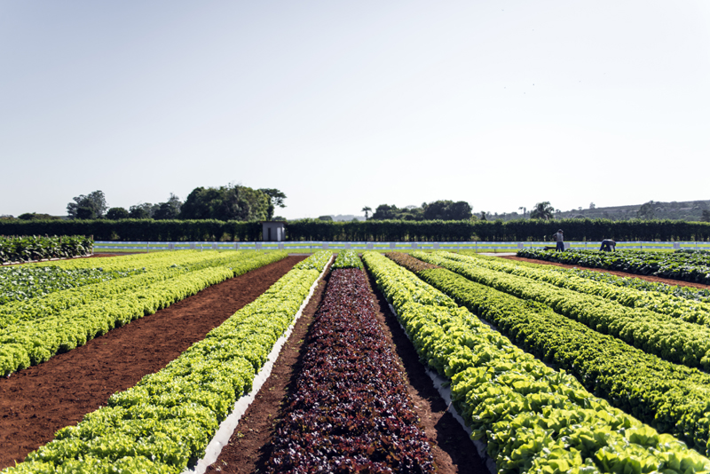

Análise do Solo
Avaliação das características físicas e químicas do solo, identificando suas condições de fertilidade e possíveis necessidades de correção.
O manejo adequado do solo é fundamental para garantir uma produção agrícola sustentável e de qualidade. Por meio de práticas técnicas, é possível melhorar a fertilidade, conservar os nutrientes e proporcionar melhores condições para o desenvolvimento das plantas.
A SilveAgro oferece orientação técnica especializada para produtores rurais que desejam melhorar o aproveitamento de suas áreas produtivas e preservar os recursos naturais.

Durante a assistência técnica, o profissional poderá desenvolver as seguintes atividades:
Avaliação das características físicas e químicas do solo, identificando suas condições de fertilidade e possíveis necessidades de correção.
Orientação sobre práticas de correção da acidez, incluindo a necessidade e a aplicação adequada de calcário, conforme os resultados da análise.
Recomendações de adubação para fornecer os nutrientes necessários ao desenvolvimento saudável das culturas.
Orientação sobre práticas que ajudam a reduzir a erosão, evitar a perda de nutrientes e preservar a qualidade do solo.
Identificação de áreas vulneráveis e orientação sobre medidas de proteção contra a ação da água e do vento.
Planejamento de práticas agrícolas que favoreçam a produtividade e a conservação dos recursos naturais.
Conte com a SilveAgro para receber orientação técnica especializada e encontrar as melhores soluções para sua propriedade rural.
Solicitar atendimento